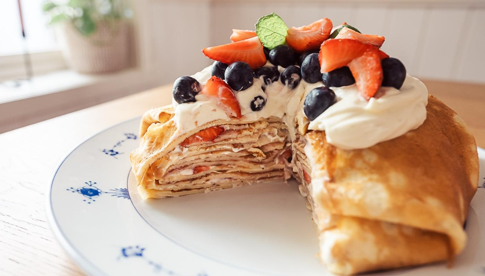

приготовление:
-
Для блинов в миске взбить 3 яйца, добавить 600мл молока, 1 ст.л. сахара, щепотку кардамона, 90 гр муки и щепотку соли. Хорошо размешать до однородного теста. Растопить 20 гр сливочного масла и добавить в тесто. Разогреть сковороду на среднем огне, смазать её маслом только перед первым блином. Выпекать тонкие блины, равномерно распределяя тесто по сковороде. Обжаривать до лёгкой золотистости с двух сторон. Дать блинам полностью остыть.
-
Для крема взбить 300–310 мл сливок с 80 гр сахарной пудры и 2 ч.л. ванильного экстракта до мягких пиков. Аккуратно вмешать 225 г сливочного сыра до однородного, воздушного крема.
-
Подготовить начинку: нарезать 2 чашки клубники или других ягод, подготовить 1 чашку клубничного джема.
-
Собрать торт. На тарелку выложить 4 блинчика внахлест, чтобы остались края на закрыть в конце, а сам торт мы будем собирать в центре наложения этих четырех блинчиков. Выкладывать слои [ блин → крем → джем / ягоды ] пока не закончатся блины. Обычно получается около 6 слоёв.
-
Завернуть нижние блины по бокам к верху, чтобы сформировать аккуратный край. С верху крем и ягоды свежие. Поставить торт в холодильник минимум на 2 часа, а лучше на ночь, чтобы он стабилизировался.